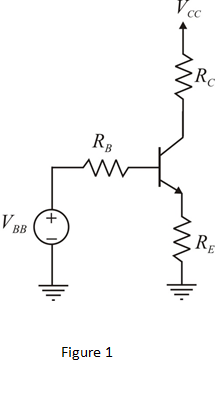
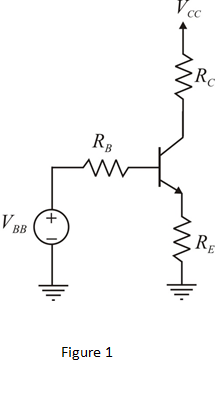
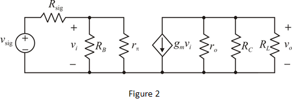

Refer to Figure P6.142 in the text book.
Draw the DC equivalent of the circuit as shown in Figure P6.142 in the text book.

The expression for the voltage is,
is,
The expression for the resistance is,
Refer to Figure P6.142 in the text book.
Draw the DC equivalent of the circuit as shown in Figure P6.142 in the text book.

The expression for the voltage is,
The expression for the resistance is,
Apply Kirchhoff’s voltage law in the circuit as shown in Figure1.
Simplify further.
The dc bias emitter current  is.
is.
Let assume emitter and collector currents are same.
Thus, the dc bias collector current is, .
It is given that, a source  with input resistance and a load are connected to the amplifier.
with input resistance and a load are connected to the amplifier.
The hybridmodel of the amplifier:

Determine the output resistance of the amplifier.
Determine the input resistance seen at base terminal.
Determine the input resistance  of the amplifier.
of the amplifier.
Simplify further.
Thus, the input resistance of the amplifier  is.
is.
Determine the output voltage of the amplifier.
Substitutefor , for
, for ,
, for
for ,for
,for , for
, for and
and for.
for.
Simplify further.
Thus, the overall voltage gain, of the amplifier is.